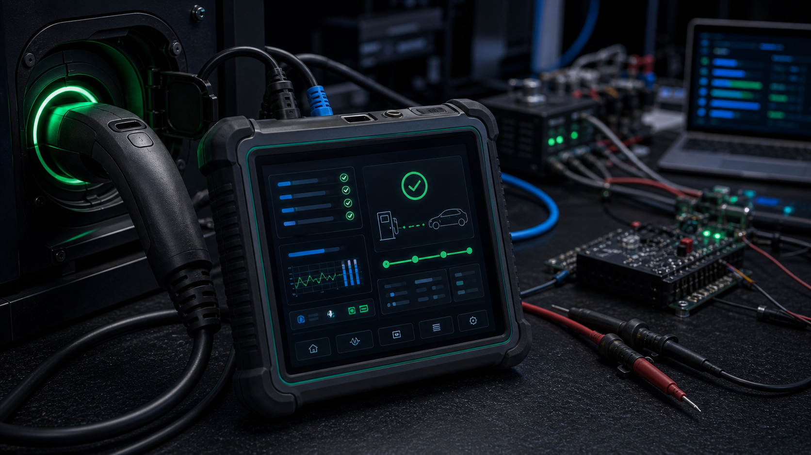
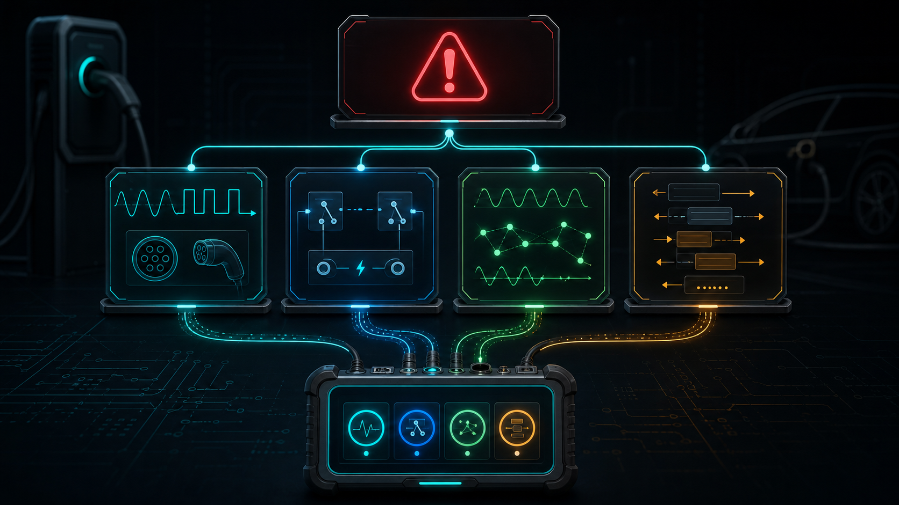
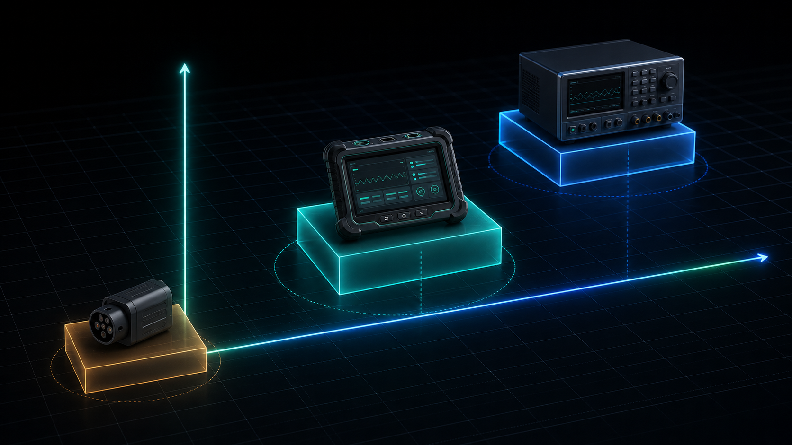

EVSE Field Diagnostic Tester · EVCT
충전 실패 원인을 현장에서 바로 좁힙니다
P4 Diagnostic Tester를 충전기에 EV처럼 연결하면 전기 신호와 ISO 15118 통신 흐름을 한 화면에서 볼 수 있습니다. 설치·개발·A/S 현장에서 문제 원인을 빠르게 좁히는 전문 진단 장비입니다.

Field Problem
차량·노트북·계측기를 꺼내기 전, 먼저 원인을 가릅니다
현장에 들어오는 정보는 대개 "충전이 안 된다"는 한 문장입니다. P4는 이 문제를 CP/PWM, 릴레이/AC 출력, PLC/SLAC/SDP, ISO 15118 AC 단계로 나눠 원인 후보를 좁힙니다.

CP/PP/PWM 확인
CP State A/B/C, CP 전압, PWM duty, PP 체결 상태를 화면에서 바로 확인합니다.
A/B/C · PWM · PP CONN릴레이·AC 출력 관찰
K1/K2, AC output, 충전 중 C/B 전이 반응을 한 화면에서 확인합니다.
K1 · K2 · AC ON/OFFSLAC/SDP 진행 상태
SLAC matched 여부, EVSE MAC, SDP IPv6/port, 통신 진행 상태를 확인합니다.
SLAC · SDP · PLC충전 상태 리포트
ChargingStatus, EV SoC, EVSE max current, V2G report, error count를 한눈에 보여줍니다.
V2G · EV SoC · EVSE maxProduct Specification
P4 상세 기능 사양
P4의 목적은 충전기 정상 여부를 현장에서 빠르게 가르는 것입니다. 전기 신호, PLC 통신, ISO 15118 AC 충전 상태, 조작 흐름, 로그를 한 장비에 담았습니다.
CP/PP/PWM 진단
CP State A/B/C, CP 전압, PWM duty, PP 체결 상태를 화면에서 바로 확인합니다.
릴레이·AC 출력 확인
K1/K2, AC output, 충전 중 C/B 전이 반응을 한 화면에서 확인합니다.
PLC/SLAC/SDP 관찰
SLAC matched 여부, EVSE MAC, SDP IPv6/port, 통신 진행 상태를 확인합니다.
ISO 15118 AC 리포트
ChargingStatus, EV SoC, EVSE max current, V2G report, error count를 한눈에 보여줍니다.
충전 중 CPTEST
충전 중에도 별도 화면에서 CP/PWM/K1/K2/AC 상태를 확인합니다. B/C 전이도 시험합니다.
현장 조작 UI
LCD, 터치, 로터리, BACK/STOP/RETEST 흐름으로 현장 엔지니어가 바로 조작합니다.
안전·복구 흐름
HOME/RETEST 시 런타임 reset, 릴레이 OFF, transient fault 지연 판정을 적용합니다.
로그·리포트
통신 상태와 판정 결과가 화면과 로그에서 같은 의미로 읽히도록 맞췄습니다.
PC 분석·증적 도구
현장 로그, LCD 캡처, 충전기별 녹화본, 자동 회귀 결과를 PC에서 보관·분석합니다.
충전기에 연결해 PP/CP 상태를 확인합니다.
A/B/C, PWM duty, K1/K2/AC 출력 조건을 확인합니다.
PLC link, SLAC matched, SDP address/port를 확인합니다.
ISO 15118 AC ChargingStatus와 EVSE max current를 확인합니다.
통신/출력/전이 문제를 화면과 로그에 나눠 남깁니다.
PC Evidence Toolchain
현장 판단을 고객사에 전달할 증적으로 바꿉니다
P4 본체가 현장 화면에서 원인을 좁힌다면, PC toolchain은 그 순간의 로그·화면·반복 시험 결과를 품질팀과 개발팀이 다시 볼 수 있는 자료로 만듭니다.
실시간 로그 수집
충전기별 이름표를 붙여 라이브 콘솔 로그를 저장합니다. 현장 엔지니어와 개발팀이 같은 파일을 기준으로 대화합니다.
LCD 화면 캡처
오류 화면, COMM/V2G 화면, CPTEST 화면을 PNG로 남겨 리포트에 직접 첨부할 수 있습니다.
자동 회귀 시험
mock 재생, 반복 reset, CP 전이, 실충전 시작 검증을 스크립트로 돌려 업데이트 후 회귀를 확인합니다.
충전기별 fixture
한 번 성공한 충전기 세션을 녹화해 나중에 재생 가능한 테스트 데이터로 만듭니다.
GUI 분석 환경
로그 뷰어, PIB 확인, PCAP·캡처 산출물 관리를 통해 현장 지원과 연구소 분석을 연결합니다.
리포트 패키지화
화면 캡처, 로그, 판정 문자열, 충전기별 재현 데이터를 묶어 고객사 장애 리포트로 전달합니다.
Diagnostic Classification
실패 원인을 읽기 쉬운 후보로 분류합니다
충전 실패를 하나의 현상으로 묶어 두지 않습니다. 전기 신호와 통신 단계를 나눠 화면과 로그에 표시합니다.

CP/PWM 문제
CP State A/B/C와 PWM duty를 보여 기본 연결과 상태 전이를 확인합니다.
릴레이/AC 출력 문제
K1/K2, AC output, 충전 중 C/B 전이 반응을 한 화면에서 확인합니다.
PLC/SLAC 문제
SLAC matched, EVSE MAC, SDP IPv6/port 등 통신 진행 상태를 확인합니다.
ISO 15118 단계 문제
ChargingStatus, V2G report, error count를 확인해 통신 단계의 원인 후보를 좁힙니다.
현장 조작 문제
LCD, 터치, 로터리, BACK/STOP/RETEST 흐름으로 현장 엔지니어가 바로 조작합니다.
리포트 전달
실패 시 읽기 쉬운 report 문자열과 로그를 남깁니다.
Market Comparison
시장 제품 비교 매트릭스
가격 환산 기준은 원본과 같습니다. 1 USD = 1,400 KRW, 1 GBP = 1,900 KRW입니다. 공개 가격은 지역, 구성, 세금, 재고에 따라 달라질 수 있습니다.
| 제품군 | 대표 제품 | 공개 가격 예시 | 주요 기능 | P4 대비 해석 |
|---|---|---|---|---|
| 단순 AC EVSE 어댑터 | Fluke FEV100/BASIC | $512.95 약 72만원 |
CP 상태 A/B/C/D 시뮬레이션, PE pre-test, GFCI test, CP/PE error, IEC 61010-1/61010-2-030, CAT II 250V, IP54. | 전기적 상태 확인용 어댑터이며, PLC/SLAC/ISO 15118 메시지 화면은 없음. |
| AC EVSE 현장 어댑터 | Megger EVCA210-UK | £350 ex VAT £420 inc VAT 약 67~80만원 |
Mode 3 AC 충전기용 CP/PP 상태, PE/CP error, PE pre-test, 1상/3상 충전포인트 확인, IP54, CAT II 300V. | 외부 계측기와 함께 쓰는 어댑터 성격. 통신 흐름과 충전 상태 리포트는 제한적. |
| AC EVSE 어댑터 국내 유통권 | Metrel A1532 계열 | 약 100만원대 국내 공개 검색가 기준 |
EVSE adapter 계열. 주로 설치 테스터와 조합해 CP/PP 및 AC 안전 확인에 사용. | 가격 기준 하한선. P4를 이 가격대에 두면 통신 진단/화면/펌웨어 가치가 시장에 전달되지 않음. |
| 휴대형 CCS/PLC 분석기 | Comemso Mini-Charger-Tester / Easy Chester 계열 | 견적형 중고·임대 시장 수백~수천만원대 |
CCS, CHAdeMO, DIN 70121, ISO 15118 등 EV 통신 시뮬레이션/분석. 구성과 옵션에 따라 가격 차이가 큼. | P4가 일부 기능을 침범하는 상위 시장. 다만 P4는 현장 AC ISO 15118 진단에 집중하고, 연구소급 부하/인증 장비는 아님. |
| 연구소·인증급 통합 테스트 시스템 | Keysight SL1040A Scienlab CDS | Used from $42,000 약 5,880만원부터 |
EV/EVSE의 AC·DC 충전 인터페이스 통합 시험, 자동 기능 시험, conformance, interoperability, 동기 계측, 통신/전력 신호 decode. | 상위 레퍼런스 시장. P4는 이 장비를 대체하지 않고, 현장 진단/초기 문제 분류를 훨씬 낮은 비용으로 제공. |
Feature Matrix
기능 비교
P4는 단순 CP/PP 어댑터보다 통신 정보를 더 많이 보여줍니다. 연구소급 인증 장비보다 가볍고 비용 부담이 낮은 현장 진단 장비를 목표로 합니다.
| 기능 | Fluke/Megger급 AC 어댑터 | P4 Diagnostic Tester | Keysight/Comemso급 연구소 장비 |
|---|---|---|---|
| CP/PP 상태 시뮬레이션 | ● | ● | ● |
| CP 전압/PWM duty 화면 표시 | △ 외부 계측기 필요 | ● 본체 화면 표시 | ● |
| 릴레이 K1/K2 및 AC 출력 상태 표시 | △ | ● | ● |
| PLC/SLAC matched 표시 | × | ● | ● |
| SDP IPv6/port 표시 | × | ● | ● |
| ISO 15118 AC ChargingStatus 표시 | × | ● | ● |
| 충전 중 CPTEST/B-C 전이 시험 | △ 수동 전기 시험 중심 | ● 충전 중 화면 진입 | ● |
| 현장 휴대성과 즉시 판독 | ● | ● 통신까지 표시 | △ 고가/복잡 |
| 인증·연구소급 conformance | × | × 현장 진단용 | ● |
Price / Function Position
가격과 기능 사이의 P4 위치
P4는 CP/PP 어댑터와 연구소급 분석기 사이를 겨냥합니다. 초점은 현장 AC ISO 15118 진단입니다.

Customer Value
P4가 고객에게 주는 가치
고객이 사는 것은 장비 한 대만이 아닙니다. 현장에서 원인을 좁히는 시간과 반복 가능한 설명력입니다.
Sales Boundary
판매 전 명확히 해야 할 범위
현장 진단 장비로 포지셔닝합니다. 인증 대체나 모든 충전기 호환을 보장하는 표현은 제외합니다.
| 포함 | 제외 또는 베타 |
|---|---|
| AC 충전기 현장 진단, CP/PP/PWM 확인, PLC/SLAC/SDP 확인, ISO 15118 AC ChargingStatus 표시, 릴레이/AC 출력 관찰, 로그 추출. | 계량·과금 인증 대체, 안전 인증 대체, 연구소급 conformance 인증, 모든 DC/CCS 충전기 호환 보장, VAS/BIP 상용 보장. |
현재 P4 실충전 검증에서는 SLAC matched, CHARGE_CONTACTOR_ON, ChargingStatus n=25 이상, CP C 약 5.8V, PWM 약 52~54%, K1/K2/AC ON, V2G report ok를 확인했습니다. 현재 한솔 충전기는 VAS 미지원 충전기이므로 VAS no_response는 기대값이며, VAS 기능은 지원 충전기에서 별도 옵션/베타 항목으로 검증하는 것이 맞습니다.
Recommended Price
권장 가격표
아래 금액은 원본 가격 정책 기준입니다. 모든 금액은 VAT 별도입니다.
초기 현장 검증 고객
3,300,000원충전기 개발/설치 업체의 초기 검증과 피드백을 전제로 한 파일럿 패키지.
- 본체
- 기본 케이블
- 기본 로그 추출
- PC 캡처 도구
- 6개월 펌웨어 업데이트
- 현장 피드백 조건
일반 판매 기준
4,900,000원A/S·품질팀이 정식 도입할 때의 기준 패키지.
- 본체
- 케이블/케이스
- 문서
- PC evidence toolchain
- 로그 리포트
- 1년 펌웨어 업데이트
프로젝트 납품
6,900,000~8,900,000원충전기 제조사, 운영사, 프로젝트 납품을 위한 현장 지원 패키지.
- 현장 동행 검증
- 충전기별 호환성 리포트
- 초기 교육
- 우선 펌웨어 패치
Contact
현장 진단 범위를 먼저 확인하세요
P4 Diagnostic Tester는 인증 장비가 아니라 현장 진단 장비입니다. 적용 충전기, 필요한 로그, 현장 지원 범위를 기준으로 상담하는 편이 가장 빠릅니다.